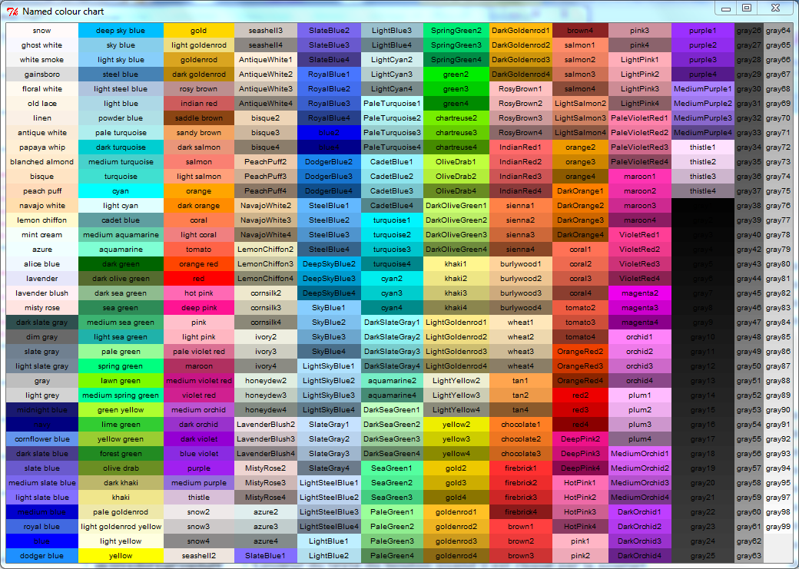
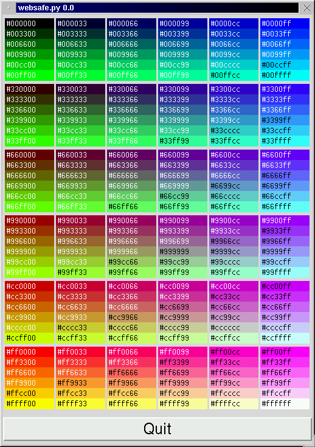

Plusieurs options permettent de changer la couleur de
widgets ou du texte de ces derniers. Voici une liste de couleurs trouvée
sur le net.

On peut aussi préciser une couleur
à laide de ces composantes rouge, vert, bleu
- Couleur 4
bits:
#rvb, chaque composante de couleur est représentée
par un digit hexadécimal
- Couleur 8
bits:
#rrvvbb,
chaque composante de couleur est représentée par deux digits
hexadécimaux
- Couleur 12
bits:
#rrrvvvbbb, chaque composante de couleur est
représentée par 3 digits hexadécimaux. #000fff000
vert
